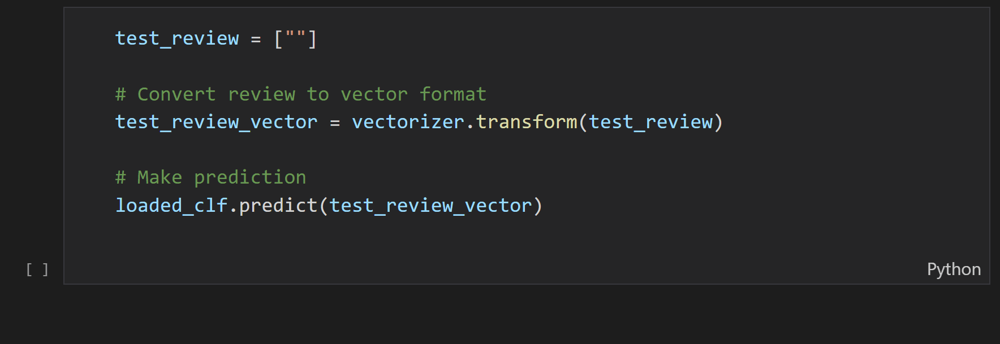

Machine Learning
10,000 Amazon reviews were used to train a machine learning model with natural language processing to classify them as either positive, negative or neutral. The GIF below shows how the model can be tested with new reviews and give accurate predictions.

- Reviews along with their rating out of five were input into the neural network, yielding an initial accuracy between 75 and 82% depending on the classification method. Since the training data contained significantly more positive reviews than negative or neutral, the results were skewed to predict positive reviews much more accurately than the others.
- The data was subsequently balanced by limiting the number of reviews of each type to match the smallest dataset. Overall accuracy did fall to between 62 and 80% however predictions could now be made equally for each category.
- Further improvements were carried out by using an alternative vectorizer which assigns greater importance to certain words and a grid search to find the optimal classification parameters. This improved predictions to between 65 and 81% accuracy.
Resources
- Python
- Scikit-Learn Library
- Jupyter Notebook